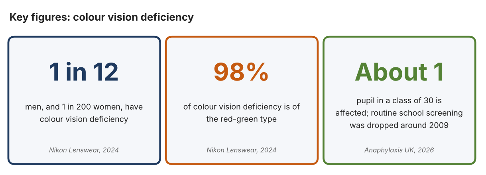
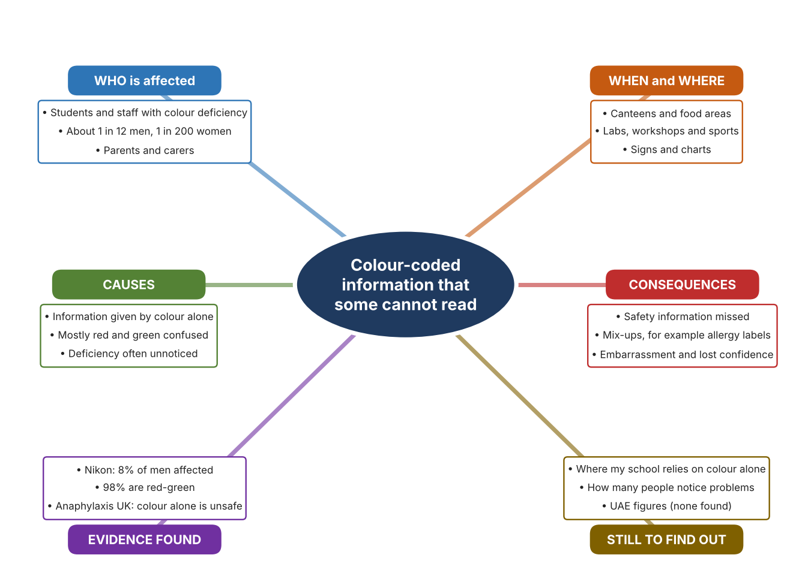
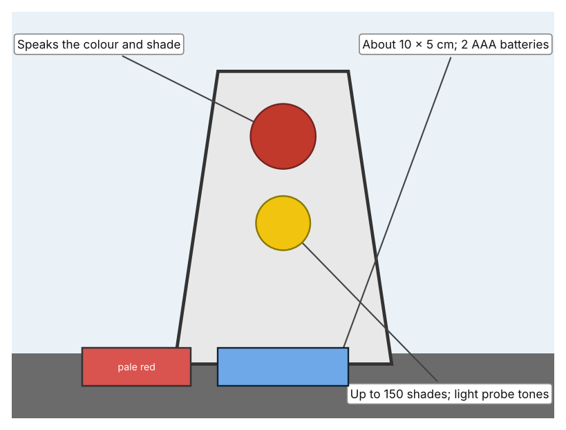
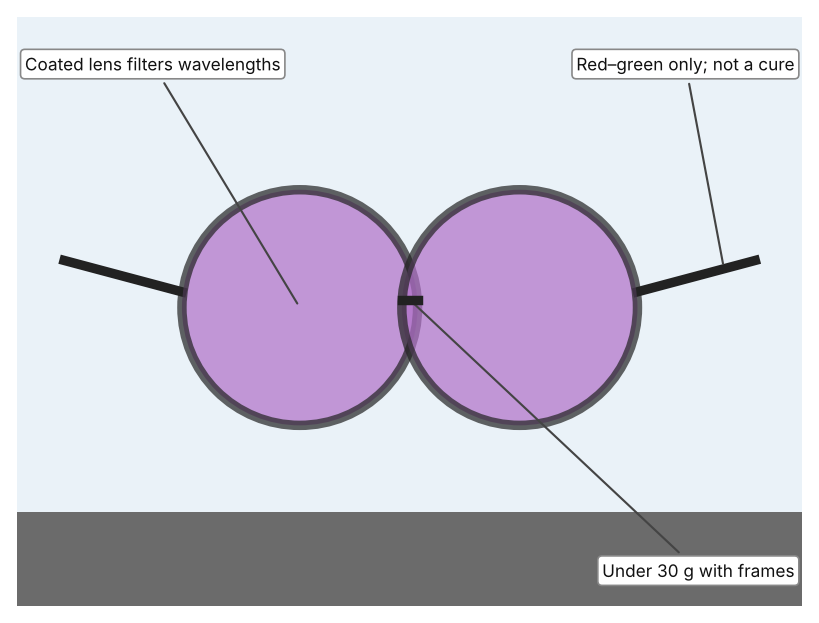
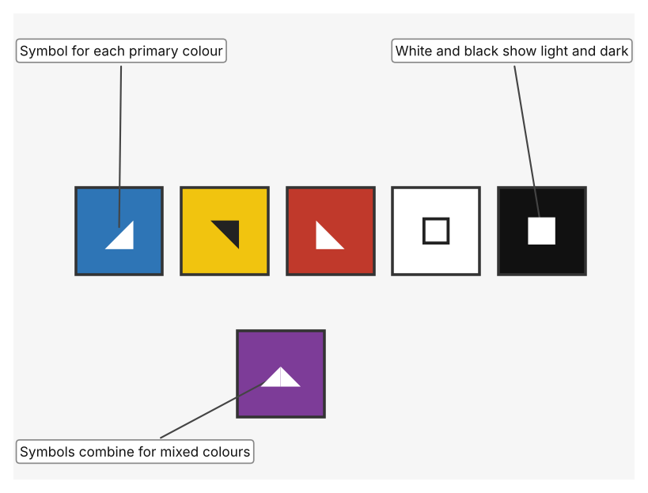

A1 · Design need
Identify and explain the problem faced by your client and community.
My client is the Health and Safety Coordinator of a school in Dubai (a fictional client created for this task). The coordinator knows that schools use colour all the time to carry information: on labels, charts, signs, equipment and wires. The coordinator is worried that students or staff who cannot tell certain colours apart may miss that information, including information that affects health and safety. The client needs everyone in the school to be able to receive important information, whatever their colour vision.
The people affected are students and staff with colour vision deficiency, who are usually not aware how much they miss. Teachers and technicians are affected, because they may use colour without realising it excludes someone. Parents and carers are affected, because a child may be at risk without anyone noticing. The community loses when some of its members cannot take part fully in lessons, activities and safe routines.
The need is supported by evidence. Nikon Lenswear reports that about 8% of men (1 in 12) and fewer than 1% of women (1 in 200) have colour vision deficiency, and that 98% of cases are of the red-green type (Nikon Lenswear). Anaphylaxis UK says that about one pupil in a class of 30 is affected, that routine school screening was dropped around 2009, and that school allergy information often relies on colour, with examples such as colour-coded labels and mixed-up cutting boards (Difolco). I could not find a UAE figure for this, so the numbers come from other countries and I record this as a gap in my evidence.
Figure 1 summarises the key figures. In my own words, colour is quick and clear for most people, but for a minority it hides the message, and the person often does not know it is hidden. What I do not yet know is how much my own school relies on colour alone, and I will find out with an audit checklist and a short survey. Figure 2 is my mind map of the problem.
335 words


A2 · Research plan
Six research questions of different types, each with a priority, a research type and evidence.
| # | Question | Priority | Primary / secondary | Evidence | Brief answer |
|---|---|---|---|---|---|
| 1 | Factual: How common is colour vision deficiency, and who is affected most? | High | Secondary | Nikon Lenswear, 2024; Cross, 2016 (Appendix A, Sources 1 and 4) | About 8% of men and fewer than 1% of women; 98% red-green; red-green type affects up to 1 in 12 men and 1 in 200 women. |
| 2 | Factual: How does reliance on colour create risks in schools? | High | Secondary | Difolco, Anaphylaxis UK, 2026 (Appendix A, Source 2) | About one pupil in a class of 30 is affected; screening largely stopped around 2009; colour-coded allergy information and cutting boards are examples where colour alone can mislead. |
| 3 | Conceptual: Why do some people confuse colours, and what does that mean for how information should be shared? | Medium | Secondary | Cross, 2016; Nikon Lenswear, 2024 (Appendix A, Sources 1 and 4) | Most people have three kinds of colour-sensing cone; when one works differently, red and green are confused. Information that depends on those colours can be misread. |
| 4 | Debatable: Should the answer be to help the person see colour differently, to tell colour in another way, or to stop relying on colour? | Medium | Secondary | Appendix A, Sources 2, 3, 4 and 5 | Glasses and tools help the individual but only if worn or carried and they do not cure the condition; changing how information is shown helps everyone at once. Anaphylaxis UK recommends not relying on colour alone. |
| 5 | Debatable (challenges my assumption): Colour vision deficiency mostly affects boys and men, so is it important enough for a whole school community? | High | Secondary | Nikon Lenswear, 2024; Anaphylaxis UK, 2026 (Appendix A, Sources 1 and 2) | About 1 in 12 boys and men is around one pupil per class, and the risk includes health and safety. No UAE figure was found, so my own audit and survey must show how colour is used in my school. |
| 6 | Factual (primary): Where does our school rely on colour alone, and how many people notice problems? | High | Primary | Own colour-use audit and survey (Appendix A, Sources 7 and 8) | [Student data needed: write the audit counts and survey averages (with permission), then two sentences on the pattern you see.] |
A3 · Existing products
Three significantly different products, each analysed with ACCESS FM, with pros and cons.
Product 1: Handheld talking colour identifier (Colorino DH288)

Illustration by the author based on the Colorino talking colour identifier, RNIB Shop (Appendix A, Source 3). [Student: replace with a photo from the source, cited MLA 9]
Product 2: Colour-filtering glasses (EnChroma CX series)

Illustration by the author based on the EnChroma CX product listing, Officer.com (Appendix A, Source 5). [Student: replace with a photo from the source, cited MLA 9]
Product 3: Colour code of symbols (ColorADD)

Illustration by the author based on “ColorADD Code,” ColorADD (Appendix A, Source 6). [Student: replace with a photo from the source, cited MLA 9]
ACCESS FM analysis
| ACCESS FM | Product 1 | Product 2 | Product 3 |
|---|---|---|---|
| Aesthetics | Small handheld device; the page gives no description of looks. | Tinted lenses in a frame; the listing describes metal-oxide coatings on glass. | Five simple graphic symbols placed next to the colour. |
| Cost | £192 including VAT (£160 excluding) at the RNIB shop. | The listing does not state a price; a 2016 article gives about $269 for children and $349 for adults. | Cost not stated on the page. |
| Customer | People who cannot name a colour at all and need it spoken. | People with inherited red-green deficiency who can wear glasses; not suitable for job colour tests. | Anyone who needs to identify colours, including people without deficiency. |
| Environment | Uses two AAA batteries and switches off after about 30 seconds. | Needs no power; blocks 100% of UV. | Printed or drawn; needs no power. |
| Size | About 10 × 5 cm. | Under 30 g; 1.3 mm glass lenses. | Symbols can be made any size on a label or object. |
| Safety | The light probe warns about lights. Bystander view: speaks aloud, so others hear it. | Does not cure; a person may still misjudge a colour. Bystander view: lens tint is visible to others. | Gives a second, non-colour cue, which supports safe identification. Bystander view: others must learn the code to read it. |
| Function | Speaks 150 shades of colour and light levels; English only. | Filters wavelengths that overlap, which helps people tell red and green apart. | Shows blue, yellow, red, white and black, and combinations of them, as symbols. |
| Materials | Materials are not stated on the page. | Glass lenses with metal-oxide coatings; frame materials not stated. | Graphic symbols; materials depend on where they are used. |
Pros and cons
| Product 1 | Product 2 | Product 3 | |
|---|---|---|---|
| Pro | Works on any object and tells the exact colour name. | Wearer sees colour differences hands-free in daily life. | Needs no device, helps everyone and can be used wherever colour identifies something. |
| Con | Must be held to each object and cannot help with signs far away. | Costly, does not cure the condition and only works for red-green deficiency. | People must learn the symbols and an object must be marked with them first. |
A4 · Design brief
Restate the need, summarise the research and the existing products, and state the design intent.
My client, the Health and Safety Coordinator of a school in Dubai, needs everyone to be able to receive important information, whatever their colour vision. About 8% of men and fewer than 1% of women have colour vision deficiency, and 98% of cases are red-green (Appendix A, Source 1). About one pupil in a class of 30 is affected, routine school screening was dropped around 2009, and school allergy information often relies on colour (Appendix A, Source 2).
My research shows that the risk lies in information that is given by colour alone, and that the person affected often does not know what they are missing (Appendix A, Sources 1 and 2). My debatable questions led me to conclude that helping the individual and changing how information is shown are different ways of reaching the same goal. My challenged assumption was that this mainly affects boys and men and so matters less; the figures show that it still affects about one pupil per class, and it involves safety. I found no UAE figure, so I will gather my own evidence with an audit checklist and a survey, with permission (Appendix A, Sources 7 and 8).
I analysed three very different existing solutions. A handheld talking colour identifier speaks the colour and shade of any object, but it costs £192 and must be held to each object (Appendix A, Source 3). Colour-filtering glasses help with red-green confusion without a cure and are not recommended for job colour tests (Appendix A, Sources 4 and 5). A code of symbols adds a second cue to colour for everyone, but people must learn it and objects must be marked first (Appendix A, Source 6). They give me three ideas for inspiration: tell the person the colour, change how the person sees it, and add another cue next to the colour.
My design intent is therefore to create a solution that helps people with colour vision deficiency to receive important information accurately and without embarrassment. It must be affordable, easy to understand without training, usable by students and staff, and dependable in ordinary school conditions. I have deliberately not fixed what form it will take. That decision will be made in Criterion B, after I analyse my own audit and survey against the evidence in Appendix A.
382 words
Appendix A · Research notes and sources
Secondary sources in MLA 9, with notes and where each source is used.
| # | Source (MLA 9) | Key notes | Used in |
|---|---|---|---|
| 1 | “Colour Vision Deficiency.” Nikon Lenswear, 22 Oct. 2024, www.nikonlenswear.com/vision-library/blog/colour-vision-deficiency. Accessed 21 Oct. 2026. | About 8% of men (1 in 12) and fewer than 1% of women (1 in 200); 95% of colour-blind people are men; 98% of cases are red-green. | A1; A2 Q1, Q3 and Q5; A4. |
| 2 | Difolco, Marie. “Why Accessible Colour Matters to Allergy Safety in Schools.” Anaphylaxis UK, 28 Apr. 2026, www.anaphylaxis.org.uk/?p=83750. Accessed 21 Oct. 2026. | About 1 in 12 boys and 1 in 200 girls; about one pupil in a class of 30; routine school screening dropped around 2009; colour-coded allergy information and cutting boards can mislead; recommends not relying on colour alone but using words, contrast and symbols. UK source. | A1; A2 Q2, Q4 and Q5; A4. |
| 3 | “Colorino Talking Colour Identifier and Light Detector.” RNIB Shop, shop.rnib.org.uk/colorino-talking-colour-identifier-and-light-detector. Accessed 21 Oct. 2026. | £192 including VAT (£160 excluding); speaks colour and shade; up to 150 shades; light probe tones; two AAA batteries; switches off after about 30 seconds; about 10 × 5 cm; English. | A2 Q4; A3 Product 1; A4. |
| 4 | Cross, Ryan. “How EnChroma's Glasses Correct Color-Blindness.” MIT Technology Review, 27 Jun. 2016, www.technologyreview.com/2016/06/27/159088/how-enchromas-glasses-correct-color-blindness/. Accessed 21 Oct. 2026. | The glasses do not cure colour blindness; they filter overlapping wavelengths to help distinguish red and green; not recommended for job colour tests; about $269 for children and $349 for adults. Article from 2016. | A2 Q1, Q3 and Q4; A3 Product 2; A4. |
| 5 | “EnChroma Advanced Glasses for the Color Blind – CX Series.” Officer.com, www.officer.com/on-the-street/apparel/eye-protection/product/10875786/enchroma-inc-enchroma-advanced-glasses-for-the-color-blind-cx-series. Accessed 21 Oct. 2026. | Filters wavelengths; red-green only; metal-oxide coatings on 1.3 mm glass lenses; under 30 g; 100% UV block; prescription and zero-power versions. Listing from about 2013; manufacturer claims unverified. | A2 Q4; A3 Product 2; A4. |
| 6 | “ColorADD Code.” ColorADD, www.coloradd.net/en/coloradd-code. Accessed 21 Oct. 2026. | Five graphic symbols for blue, yellow and red plus white and black; combined by colour-addition theory to show the whole palette; used wherever colour is for identification. | A2 Q4; A3 Product 3; A4. |
| 7 | Primary: colour-use audit, completed by the student on [date]. Accessed own data. | [Student: summarise your counts.] | A2 primary question; A4. |
| 8 | Primary: survey of [number] people, completed on [date]. | [Student: summarise your averages.] | A2 primary question; A4. |
Primary research instrument 1: colour-use audit
Student completes the audit with permission, in public school areas only, and records no names.
| Area | Item that uses colour | Colour is the only cue (Y/N) | Words or symbols too (Y/N) | Contrast is clear (Y/N) | Notes |
|---|---|---|---|---|---|
| Canteen or food area | |||||
| Lab or workshop | |||||
| Corridor or signs | |||||
| Sports equipment |
Primary research instrument 2: survey
Rate each statement from 1 (strongly disagree) to 5 (strongly agree). Collect responses with permission and record no names.
| Statement | 1 | 2 | 3 | 4 | 5 | Total responses |
|---|---|---|---|---|---|---|
| I can tell the colours on school signs and labels apart easily. | ||||||
| I have misread something because of its colour. | ||||||
| Important information in school also uses words or symbols. | ||||||
| I would tell a teacher if I could not read a colour. |